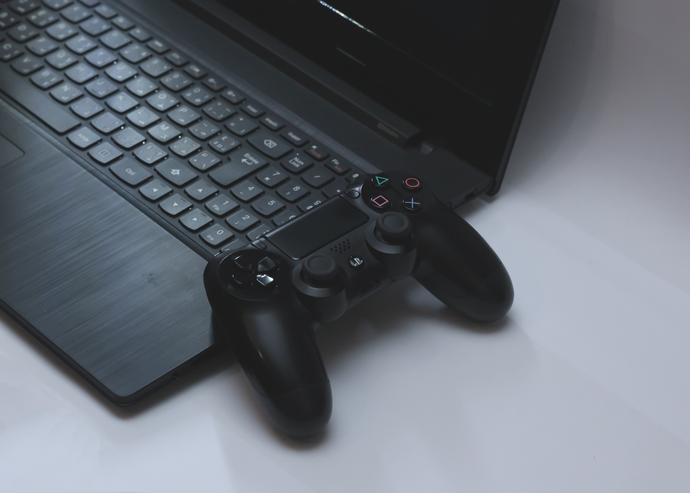

게임의 이상향:
탄탄하고 누구나 몰입할수있는 스토리
보면 볼수록 매혹되어져 가는 매력적인 그래픽
누구나 쉽게 시작해서 오랫동안 해도 질리지 않는 시스템
지속적인 흥미와 관심거리, 단순한 시간 죽이기 용이 아닌 컨텐츠
플레이어의 2차 창작, 상상력을 계속해서 자극시키는 세계관
심한 차별을 느끼지 않으면서 또 다른 한가지의 특권으로 여겨질수 있는 현질 시스템
누구나 간편하게 볼수 있으며, 약간의 조작으로 금방 익힐수 있는 UI

대학졸업전까지 할것들:
게임 제작(희망사항)
기획서, 역기획서(시나리오 및 메인 시스템 ui 희망) 제작(프로)
프로그래밍 공부(준프로~프로)
원화 공부(아마추어 정도)
영어 공부(토익 900점이상, 스피킹 중학교 교과서 수준)